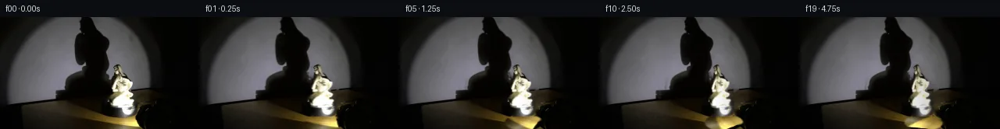
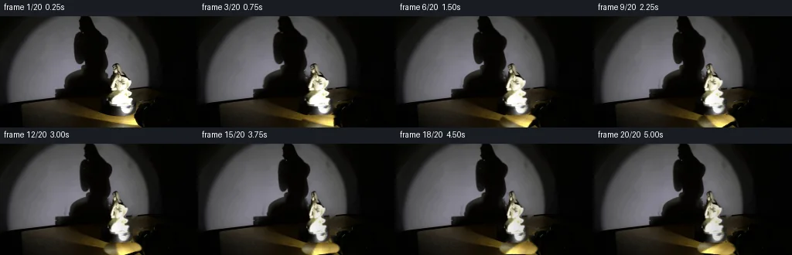
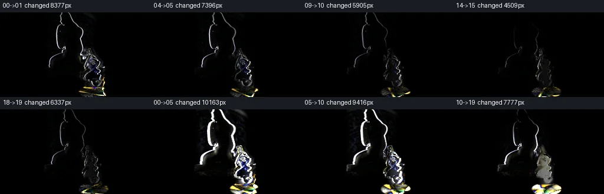

V0 · 初版 · 最终提交
![]()
Observable Generation Trace
把最终像素视频、Harness 冻结的每轮候选、真实工具事件和 Agent 自述放在同一页。可观测证据与模型自述分开标记，避免把“模型说它检查过”误当成真实工具调用。
![首帧]()
Static locked-off single-shot with fixed frame throughout filmed with constant framerate in real-time. The scene shows a realistic scientific demonstration. The scene only contains the described setup and actions. The small porcelain statue sits on the black, clockwise-rotating platform, and the spotlight points toward the porcelain statue. The small porcelain statue rotates clockwise on the black platform while the spotlight casts a large shadow on the wall behind it.
首帧显示在左侧播放器初始画面。Track 权限、隔离和 tensor 一致性来自 run manifest，而不是 METHOD.md。
默认勾选初版和最终版；可选其他版本一起同步播放。仅检查图更新的连续重复快照已合并，回退旧视频仍保留为一次修订。
Observable events
来源：events.jsonl + run manifest
此 Track 禁止读取输出图片。逐轮预览由外部 Harness 自动冻结，只用于事后审计，生成 Agent 当时看不到这些页面。
Frozen candidates
每张图来自该 round 的真实 00 / 01 / 05 / 10 / 19 帧

pixels 7aba3d7334e8e6fd · code 5df76c50f89c2765
--- previous/generate.py +++ current/generate.py @@ -0,0 +1,223 @@ +#!/usr/bin/env python3 +"""Generate the PixelWorld continuation using only local numeric pixel operations.""" + +from pathlib import Path +import math + +import cv2 +import numpy as np +from PIL import Image, ImageDraw +from scipy.ndimage import binary_closing, binary_dilation, gaussian_filter, label + +import artifact_io + + +ROOT = Path(__file__).resolve().parent +H, W = 144, 256 + + +def smoothstep(edge0, edge1, value): + value = np.clip((value - edge0) / (edge1 - edge0), 0.0, 1.0) + return value * value * (3.0 - 2.0 * value) + + +def statue_matte(rgb): + """Derive a soft matte from the statue's warm glaze and bright whites.""" + f = rgb.astype(np.float32) + lum = f.mean(axis=2) + yy, xx = np.mgrid[:H, :W] + roi = (xx >= 137) & (xx <= 174) & (yy >= 58) & (yy <= 127) + + # The wall is cool gray (B >= R); the porcelain is warm or nearly white. + core = roi & (((f[..., 0] - f[..., 2] > 5.0) & (lum > 22.0)) | (lum > 138.0)) + core = binary_closing(core, iterations=2) + + # Keep the one component containing the main body and the connected raised detail. + joined = binary_dilation(core, iterations=1) + components, _ = label(joined) + statue_id = int(components[103, 158]) + keep = components == statue_id + keep = binary_dilation(keep, iterations=1) & roi + alpha = gaussian_filter(keep.astype(np.float32), 0.72) + + # Avoid lifting the separate turntable rim into the statue sprite. + alpha[128:, :] = 0.0 + return np.clip(alpha, 0.0, 1.0) + + +def remove_statue(rgb, alpha): + """Numerically inpaint the wall/stand hidden by the initial statue.""" + mask = binary_dilation(alpha > 0.055, iterations=2).astype(np.uint8) * 255 + # TELEA preserves local gradients around the cool wall and near-black stand. + return cv2.inpaint(rgb, mask, 5.0, cv2.INPAINT_TELEA).astype(np.float32) + + +def rotate_platform(base, angle): + """Rotate the low-contrast texture and reflections on the elliptical turntable.""" + yy, xx = np.mgrid[:H, :W].astype(np.float32) + cx, cy, rx, ry = 158.0, 135.0, 24.0, 10.5 + nx = (xx - cx) / rx + ny = (yy - cy) / ry + radius = np.sqrt(nx * nx + ny * ny) + polar = np.arctan2(ny, nx) + + # Image y points down, so increasing screen-space angle is clockwise. + source_angle = polar - angle + map_x = cx + rx * radius * np.cos(source_angle) + map_y = cy + ry * radius * np.sin(source_angle) + remapped = cv2.remap(base, map_x, map_y, cv2.INTER_LINEAR, + borderMode=cv2.BORDER_REFLECT_101) + + # Feather the disk boundary and leave the fixed room outside untouched. + edge = np.clip((1.08 - radius) / 0.12, 0.0, 1.0) + edge *= smoothstep(125.0, 128.0, yy) + edge = gaussian_filter(edge.astype(np.float32), 0.45)[..., None] + return base * (1.0 - edge) + remapped * edge + + +def deform_wall_shadow(base, angle): + """Warp the photographed penumbra in phase with the rotating statue.""" + yy, xx = np.mgrid[:H, :W].astype(np.float32) + + # The shadow is enlarged by the near light source. Its upper part moves most. + displacement = (6.2 - 0.028 * yy) * math.sin(angle) + displacement += 1.6 * (yy / 112.0) * math.sin(2.0 * angle) + vertical_phase = 1.1 * math.sin(angle) * np.sin((yy - 8.0) / 21.0) + displacement += vertical_phase + … diff truncated; 136 more lines …
Final visual checks
Harness 保存的最终产物


Agent claims
以下文字由生成 Agent 撰写，不等同于工具证据
The platform makes a continuous, moderate clockwise turn of about 115 degrees during the shot. Clockwise direction is conveyed by the migration of glaze features and rim reflections toward screen-left across the visible front surface. The shadow deformation stays phase-locked to that rotation.
| Frame | Time | Planned state |
|---|---|---|
| 00 | 0.00 s | Exact source image; statue and enlarged wall shadow at their initial orientation. |
| 01 | 0.25 s | Rotation begins subtly; nearest rim highlight and statue surface features start drifting left. |
| 02 | 0.50 s | About 12 degrees; statue outline is almost unchanged, shadow crown starts to shift. |
| 03 | 0.75 s | About 18 degrees; warm glaze detail migrates left, shadow's upper edge responds. |
| 04 | 1.00 s | About 24 degrees; gentle side reveal and a small amplified shadow deformation. |
| 05 | 1.25 s | About 30 degrees; platform rim reflection advances clockwise. |
| 06 | 1.50 s | About 36 degrees; figure narrows slightly as its quarter profile develops. |
| 07 | 1.75 s | About 42 degrees; internal porcelain highlights continue coherent leftward travel. |
| 08 | 2.00 s | About 48 degrees; projected shadow widens on one side and contracts on the other. |
| 09 | 2.25 s | About 54 degrees; stable real-time turn with fixed lighting and background. |
| 10 | 2.50 s | About 61 degrees; most visible features approach the left/front quadrant. |
| 11 | 2.75 s | About 67 degrees; side profile is clearest and the shadow crown is most displaced. |
| 12 | 3.00 s | About 73 degrees; newly revealed side uses softened reflected porcelain texture. |
| 13 | 3.25 s | About 79 degrees; base rim highlight continues its clockwise sweep. |
| 14 | 3.50 s | About 85 degrees; narrowest apparent silhouette, without collapsing to a flat card. |
| 15 | 3.75 s | About 91 degrees; rotation passes the quarter-turn smoothly. |
| 16 | 4.00 s | About 97 degrees; reflected/rear-side glaze features become dominant. |
| 17 | 4.25 s | About 103 degrees; silhouette begins broadening slightly again. |
| 18 | 4.50 s | About 109 degrees; wall shadow transitions toward the corresponding rear-side shape. |
| 19 | 4.75 s | About 115 degrees; motion remains in progress, with no artificial pause or loop snap. |
This continuation was produced entirely with local deterministic Python pixel operations. I did not use an image viewer, external model, external engine, network resource, reference image, or mask.
first_frame.png is loaded as an 8-bit RGB array.R - B) with a high-luminance test, binary closing/dilation, connected-component selection at the measured body location, and a small Gaussian edge feather.first_frame.png.artifact_io.save writes the 20 PNG frames, the packed uint32 pixels.npz tensor, the inspection contact sheet, and the standalone HTML player. generate.py also writes transition_check.png, whose eight labeled panels are enhanced absolute RGB differences for short and longer frame intervals.
The generator then reloads every saved PNG, repacks it as 0xRRGGBB, and compares it exactly with the corresponding (144, 256, 20) uint32 tensor slice. It also verifies the reloaded frame 00 against the source and confirms that every consecutive transition changes pixels. The generated diagnostic values show smooth nonzero transitions, with mean absolute RGB changes per step between about 0.405 and 1.210 over the full frame.
No claim of visual review is made; quality control used numeric RGB statistics, masks, bounding boxes, centroids, transition counts, and exact array comparisons only.